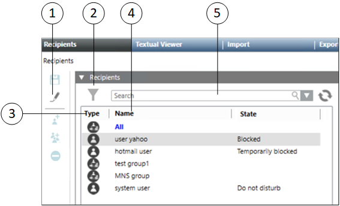

Recipient Users
Recipient users represent persons who will receive messages from Notification through one or more recipient user device types, that are personal communication devices. Recipient user profiles contain personal contact information, information about one or more personal communication devices.
Below are the different types of recipients:
Recipient Types | ||
| Name | Description |
Recipient User | Displays a recipient user. | |
Recipient Group | Displays a recipient group. | |
To view the details of recipients, navigate to Applications > Notifications > Recipients in System Browser.

| Name | Description |
1 | Toolbar | Displays the icons for operations such as Save configuration, Add User, Add Group, , Remove, Import File, Import Recipients from Active Directory, and Export File. |
2 | Filter | Filters the recipients per their types. For example, users, groups. |
3 | Type | Displays the recipient types such as users, groups. |
4 | Name | Displays the name of the recipient. |
5 | Search | Search for a particular recipient from the list of available recipients. |
Recipients Toolbar | ||
| Name | Description |
| Save | Saves the recipient. |
Operation | When selecting Operation, the toolbar icons such as Add User, Add Group and Remove are disabled and the Operation icon turns into an Edit icon. | |
| Edit | When selecting Edit, the toolbar icons such as Add User, Add Group and Remove are enabled and the Edit icon turns into an Operation icon. |
| Add User | Adds a recipient. |
| Add Group | Adds a recipient group. |
Remove | Removes the selected recipient. | |